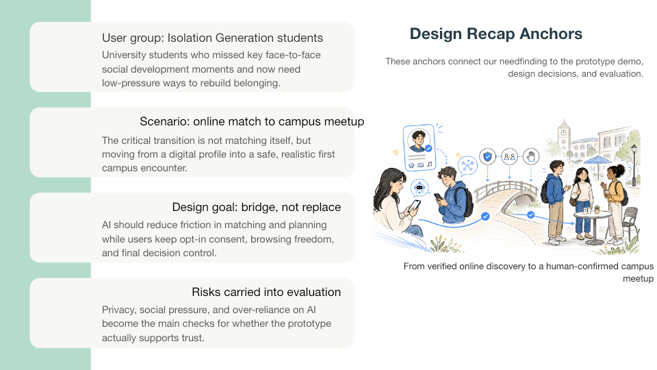

About me
I am Mingwei Xu, a member of Group 3 in ARIN5301. My work in this project focused on turning our needfinding results into a clear explanation of the target users, target scenario, and design rationale.
Personal Portfolio Page
This portfolio documents my contribution to Group 3's HCI project, MagpieBridge, an AI-supported campus social platform that helps post-pandemic students move from online discovery to safer real-world campus meetups.

I am Mingwei Xu, a member of Group 3 in ARIN5301. My work in this project focused on turning our needfinding results into a clear explanation of the target users, target scenario, and design rationale.
MagpieBridge addresses a post-pandemic campus need: students want social connection, but the transition from digital interaction to face-to-face meeting can feel uncertain, risky, and high-pressure.
This page provides a clean entrance to the project diary, prototype evidence, group artifacts, and my personal reflection on HCI knowledge gained through the project.
Project snapshot
The core design principle is that AI should lower the friction of reconnecting, while the user remains in control. AI can recommend matches, suggest activities, and support meeting arrangements, but the decision to connect, meet, or override suggestions stays with the human user.
The project page includes the project goal, learning and execution process, evidence images and videos, my responsibilities and achievements, and a personal reflection on knowledge gained, lessons learned, use of AI, and challenges encountered.